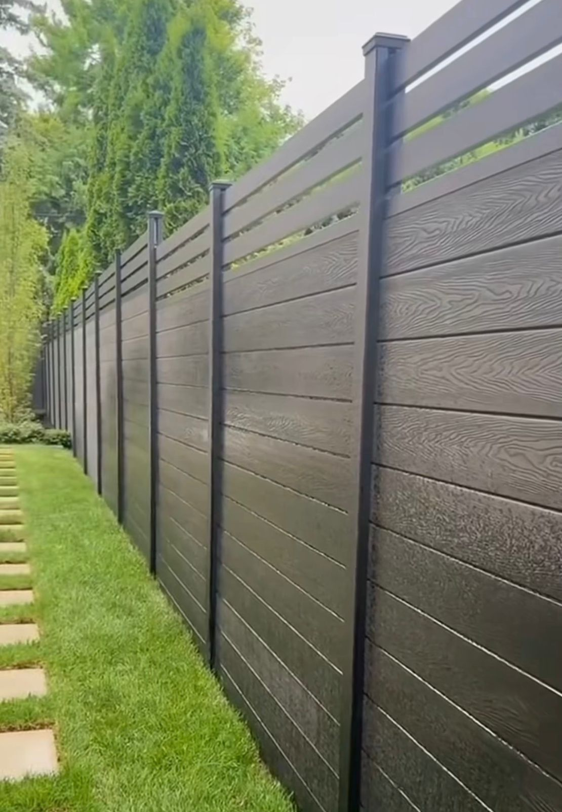

Materials Explained
What is co-extruded WPC?
Not all composite is equal. The word that matters is capped. Here's what WPC is, what co-extrusion and the ASA/PE cap actually do, and why capped board holds up for decades while uncapped fades and swells in a few years.
The Basics
What is WPC?
WPC stands for wood-plastic composite. It blends reclaimed wood fibre with high-density polyethylene (HDPE) and a few binders, then extrudes the mix into fence boards. The wood fibre gives the board a natural, timber-like look and feel; the HDPE makes it stable and resistant to rot, insects and moisture. You get the warmth of timber without timber's habit of splitting, warping and rotting — and none of the ongoing oiling and staining.
That's the headline. But the composite core on its own still has a weak spot: an exposed composite surface can absorb water and fade in the sun. This is where co-extrusion changes everything.
What co-extrusion and the ASA/PE cap do
Co-extrusion means the board is made in a single pass with two layers fused together: the WPC core, and a tough outer shell called the cap. Fencly uses an ASA/PE cap that bonds to the core as the board is formed, creating a hard, UV-stable, moisture-proof outer skin. Because the cap is co-extruded rather than glued on afterwards, it can't peel or delaminate — it's genuinely part of the board.
The cap is where the performance lives. It carries the UV stabilisers that keep colour true, it seals the composite core against water, and it gives the surface its stain and scratch resistance. In short, the core provides strength and the timber character; the cap provides the longevity.
Capped vs uncapped composite
This is the distinction that decides how a composite fence ages — and where a lot of cheap "WPC" quietly cuts corners.
- Uncapped WPC has an exposed composite surface. It drinks up moisture, fades, stains easily and can swell — often visibly within three to five years. It looks fine on day one and tired soon after.
- Capped WPC seals that same core inside a protective ASA/PE shell. It holds its colour, shrugs off stains and stays dimensionally stable for far longer. It's the version that still looks right a decade later.
If a composite fence quote looks unusually cheap, uncapped board is often the reason. Fencly only supplies co-extruded, capped WPC. For a broader head-to-head with other materials, see WPC vs timber and WPC vs Colorbond.
Why it matters for warranty & longevity
The cap is what a manufacturer can actually stand behind. Because a co-extruded ASA/PE cap protects against UV fading, moisture and staining, Fencly backs its board with a 15-year written warranty — read the detail on our warranty page. Uncapped composite usually carries shorter or heavily caveated warranties, because its failure modes are predictable. For a fence you want to fit once and forget, capping isn't a nice-to-have; it's the whole point.
How Fencly's board is made
Every Fencly board is co-extruded with a wood-fibre-and-HDPE core wrapped in a bonded ASA/PE cap, in a woodgrain finish and a range of colours. It's the same capped board across our privacy fencing, gates and cladding, so the whole boundary ages together. Choose it once, install it (or let us), give it the occasional wash, and it holds its look for years.
Ready to explore? Browse the range on the WPC fencing Sydney hub, see the colours, check the cost guide, or read how to install a WPC fence and our installation service.
WPC FAQ
Co-extruded WPC questions.
What is WPC made of?
Wood-plastic composite: reclaimed wood fibre combined with high-density polyethylene (HDPE) and binders, extruded into boards. The wood gives it a timber look; the HDPE makes it stable and resistant to rot, insects and moisture.
What does "co-extruded" mean?
The board is made in one pass with a WPC core and a bonded ASA/PE cap fused to it. Because the cap is co-extruded rather than glued on, it won't peel — and it's what protects the colour and surface for the long term.
Capped vs uncapped — does it matter?
A lot. Uncapped WPC fades, stains and can swell within three to five years. Capped WPC seals the core in a protective shell so it holds colour and stays stable for far longer. Fencly only supplies capped board.
Why does capping affect the warranty?
The cap protects against UV, moisture and staining, so it's what a maker can stand behind. That's why Fencly offers a 15-year written warranty on its co-extruded capped board.
Want capped board on your boundary? Book a free measure or call 0421 201 613.
Co-Extruded, Capped WPC
Fit it once. It lasts.
Only co-extruded, ASA/PE capped WPC — backed by a 15-year written warranty. Get a fixed-price quote inclusive of GST.